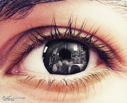
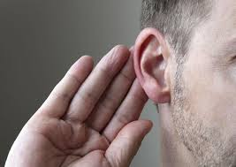
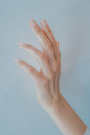
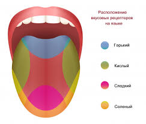

Кабыл алуу – сезүү органдары аркылуу чындыкты түздөн-түз таанып-билүү процесси. Ал айлана-чөйрөдөгү объекттердин жана кубулуштардын касиеттерин аң-сезимде чагылдырууну камсыздайт. Кабыл алуу мейкиндик, убакыт, форма, түс, үн, жыт, даам жана кыймыл сыяктуу ар түрдүү параметрлерди камтыйт. Ал туюмдарга негизденип, тажрыйба, көңүл буруу жана муктаждыктар менен тыгыз байланышта болот. Кабыл алуунун тактыгы жана толуктугу адамдын психикалык абалына, мурунку тажрыйбасына жана тышкы факторлорго жараша өзгөрүшү мүмкүн.

Коруу
Коруунун сезүү органы – бул адамдын же жаныбарлардын чөйрөдөгү объекттерди, жарыкты жана түстөрдү кабыл алуу үчүн жооптуу болгон орган. Адамда коруу сезүү органы катары көздөр эсептелет. Көздөр жарыкты кабыл алып, мээге сигналдарды жиберет, ал эми мээ бул сигналдарды иштеп чыгып, бизге чөйрөнү көрүүгө жардам берет. Мисал катары, адамдардын көздөрү жарыкка сезгич клеткаларга (фото-рецепторлорго) ээ, бул клеткалар жарыкты кабыл алып, визуалдык маалыматты түзөт. Бул маалымат мээге жеткенде, биз объекттердин формасын, түсүн жана кыймылын көрө алабыз.

Угуу
Угуу сезүү органы – бул адамдын же жаныбарлардын угуу функциясын камсыз кылган орган. Анын негизги функциясы үн толкундарын кабыл алуу жана анализдөө болуп саналат. Адамдарда угуу сезүү органы негизинен кулак аркылуу иштейт. Кулак үч бөлүктөн турат: сырткы кулак, орто кулак жана ички кулак. Мисал катары, кулакка келген үн толкундар сырткы кулак аркылуу кирип, орто кулактагы угуучу чөйрөлөр аркылуу ички кулакка жетет. Ички кулактагы коклея структурасында үн толкундарын электр сигналдарына айландыруу процессинде угуу нерви аркылуу мээге жөнөтүлөт. Мээ бул сигналдарды иштеп, үндөрдү тааныйт. Угуу сезүү органы адамдар үчүн маанилүү, анткени ал социалдык байланыштарды, коммуникацияны жана коопсуздукту камсыз кылат.

Сезүү
Сезүү сезүү органы – бул адамдын же жаныбарлардын туюмдарын кабыл алуу үчүн жооптуу орган. Анын негизги функциясы ар кандай физикалык стимулдарды, мисалы, температура, басым, жыт жана текстураны сезүү болуп саналат. Сезүү органдары териде, мурунда, тилде жана башка органдарда жайгашкан. Мисал катары, теридеги сезүү рецепторлору температураны, басымды жана ооруну сезүүгө жардам берет. Бул маалымат мээге жеткенде, адам чөйрөдөгү объекттерди жана кубулуштарды сезе алат.

Даам сезүү
Тил – бул адамдын даамды сезүү үчүн жооптуу орган. Тилде 10,000ден ашык даам рецепторлору бар, алар ар кандай даамдарды, мисалы, таттуу, ащы, кычкыл, туздуу жана умами (түштүк даамы) сезүүгө мүмкүндүк берет. Мисал катары, таттуу даамды карап көрөлү. Таттуу даамды сезүү үчүн тилдин үстүндөгү атайын рецепторлор, мисалы, глюкоза же фруктоза сыяктуу шекерлерди кабыл алат. Бул рецепторлор активдешкенде, мээге таттуу даам жөнүндө сигнал жөнөтүлөт, жана адам шекер же таттуу тамактарды тааный алат.